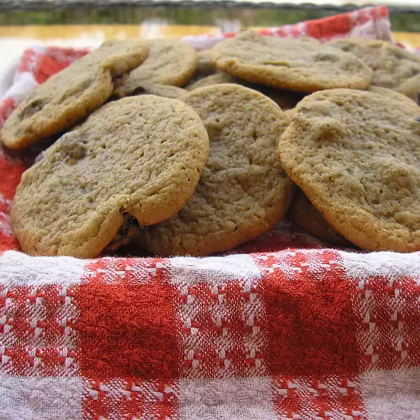

Recipe cookies

Description
This is one of my mom's favorite cookies that she made quite often. Mom had lots of family and friends over and they always had these cookies on hand with tea.
Ingredients
- ½ cup butter, softened.
- ½ cup shortening.
- 1½ cups packed brown sugar.
- 3 eggs.
- 2 cups all-purpose flour.
- 1 teaspoon baking powder.
- ½ teaspoon baking soda.
- ½ teaspoon salt.
- 1 teaspoon ground cinnamon.
- ½ teaspoon ground nutmeg.
- ¼ teaspoon ground cloves.
- 1 cup raisins.
- ½ cup chopped walnuts.
- 1 cup dates, pitted and chopped.
Steps
- Preheat oven to 375 degrees F (190 degrees C).
- Cream together the shortening and the butter. Add the brown sugar and cream until light and fluffy. Beat in the eggs until well blended.
- Sift the flour, baking powder, baking soda, salt, cinnamon, nutmeg, and cloves over the creamed mixture. Mix in then stir in the raisins, nuts and dates.
- Drop cookies onto ungreased baking sheets and bake at 375 degrees F (190 degrees C) for 8 to 10 minutes or until golden.